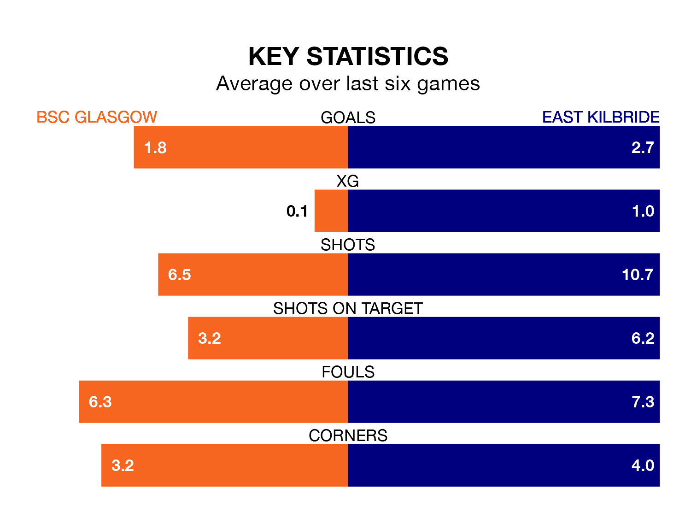

East Kilbride travel to the moreroom.com Stadium for Sunday's match against BSC Glasgow looking to bounce back from defeat last time out in the Lowland Football League.
The Kilby, who sit top of the league after 29 games, fell to a 2-0 home defeat to Bo'ness United on March 16.
They face a BSC Glasgow side who picked up a win in their last match, a 1-0 victory against Edinburgh University, and who sit 13th in the table.
With 83 goals in 29 games so far this season, East Kilbride are the league's highest scorers with 2.9 goals per game. And they are conceding fewer than average, letting in 36 goals at a rate of 1.2 per game.
BSC Glasgow, meanwhile, are below average scorers, with 1.6 goals per game, compared to a league average of 1.7. They have also conceded 1.6 goals per game.
In the last 10 years, BSC Glasgow and East Kilbride have played each other on 17 occasions. BSC Glasgow won three of them, East Kilbride 10, and they drew four times.
On average, BSC Glasgow scored 0.9 goals and the Kilby 1.9 in those matches.
Their last meeting was on February 20, when East Kilbride won 2-1 away.
The home side are in disappointing form in the Lowland Football League, with two wins and four losses from their last six games.
With four wins and two losses over that period, the Kilby's form is much better – they have taken 12 points from 18, compared to BSC Glasgow's six.
Updated: 10:19 (UTC), 22/03/24